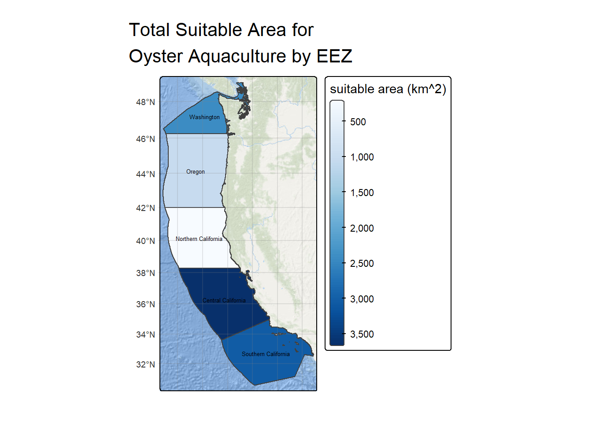
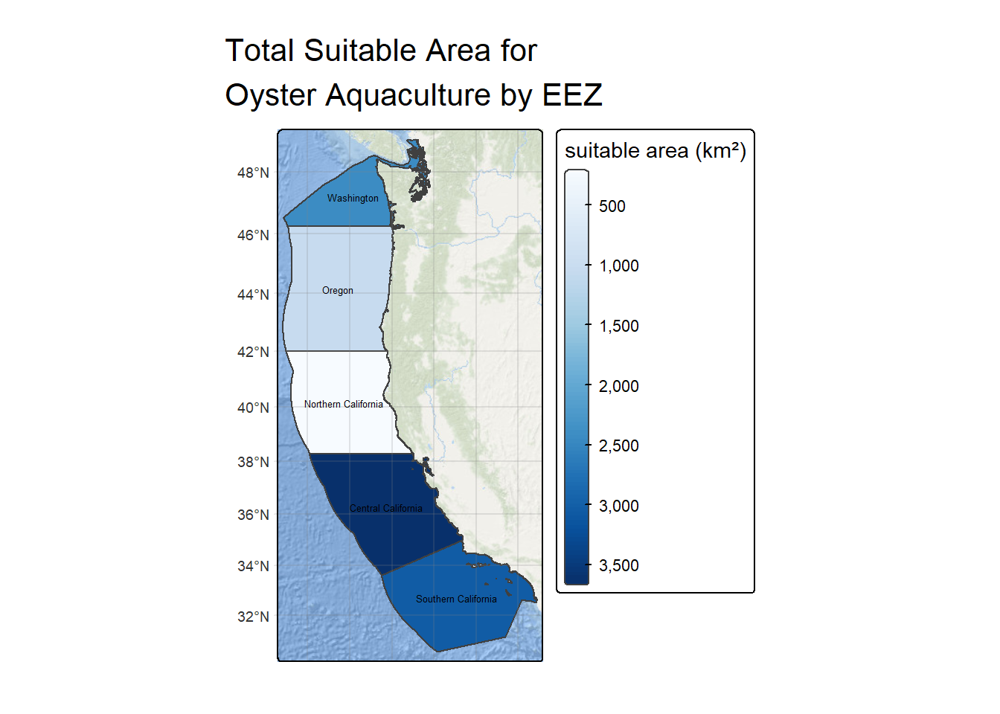

# Read in necessary libraries
library(tidyverse)
library(sf)
library(here)
library(tmap)
library(patchwork)
library(raster)
library(terra)
library(tidyterra)
library(stars)EDS 223 Homework 4: Determining Suitable Aquaculture EEZ
Setup Code
- Loading necessary libraries
- Importing data
# Load data in
eez <- read_sf(here("data", "wc_regions_clean.shp"))
depth <- rast(here("data", "depth.tif"))
# Combine sst rasters into a stack
sst <- rast(c((here("data", "average_annual_sst_2008.tif")),
(here("data", "average_annual_sst_2009.tif")),
(here("data", "average_annual_sst_2010.tif")),
(here("data", "average_annual_sst_2011.tif")),
(here("data", "average_annual_sst_2012.tif"))))# Check CRS and fix if no match
if (crs(eez) == crs(depth) &
crs(eez) == crs(sst) &
crs(depth) == crs(sst)){
print("CRS matches on all data")
} else{
warning("CRS does not match between all datasets")
crs(depth) <- crs(eez)
crs(sst) <- crs(eez)
}Find mean SST from 2008-2012
# Create raster of average SST values
mean_sst <- mean(sst)
mean_sst <- mean_sst - 273.15# Crop by the extent of the sst
sst_ext <- ext(mean_sst)
depth_crop <- crop(depth, sst_ext)res(depth_crop) == res(mean_sst)
depth_crop_res = resample(depth_crop, mean_sst)
res(depth_crop_res) == res(mean_sst)# Check that bathymetry layer can stack with mean_sst- making sure that crs, res, and ext match
c(depth_crop_res, mean_sst)
# Works# Reclassify suitable locations based on parameters
# Create reclassification matrices
sst_rcl <- matrix(c(-Inf, 11, 0,
11, 30, 1,
30, Inf, 0),
ncol = 3, byrow=TRUE)
depth_rcl <- matrix(c(-Inf, -70, 0,
-70, 0, 1,
0, Inf, 0),
ncol = 3, byrow=TRUE)
# Reclassify appropriately
sst_reclass <- classify(mean_sst, rcl = sst_rcl)
depth_reclass <- classify(depth_crop_res, rcl = depth_rcl)# Multiply rasters to find where suitable conditions overlap
suitable <- sst_reclass*depth_reclass# Find the total suitable area within each eez
# Mask eez by suitable cells in West Coast region
suitable_eez <- mask(suitable, eez)
zonal <- extract(suitable_eez, eez)
zonal_count <- zonal %>%
group_by(ID) %>%
summarise(count = sum(mean, na.rm = TRUE))
eez_area <- suitable_eez *cellSize(suitable_eez, unit = 'km')
zonal_area <- extract(eez_area, eez)
zonal_area <- zonal_area %>%
group_by(ID) %>%
summarize(area = sum(mean, na.rm = TRUE)) %>%
rename('rgn_id' = ID)
eez_zone_areas <- left_join(eez, zonal_area, by = 'rgn_id')
tm_shape(eez_zone_areas) +
tm_polygons(fill = 'area',
fill.scale = tm_scale_continuous(values = "brewer.blues"),
fill.legend = tm_legend(title = "suitable area (km^2)")) +
tm_basemap("Esri.OceanBasemap") +
tm_title(text = "Total Suitable Area for Oyster Aquaculture by EEZ", width = 10) +
tm_layout(component.autoscale=FALSE) +
tm_graticules(alpha = 0.2) +
tm_basemap("Esri.OceanBasemap") +
tm_text(text = "rgn", size = 0.4)
# Create subset of data frame to pull out most suitable EEZ
eez_table <- eez_zone_areas %>%
select(rgn, area) %>%
st_drop_geometry() %>%
#rename("Region" = rgn, "Area (km²)" = area) %>%
slice_max(area, n=1)
# Print in kable formatting
kableExtra::kable(eez_table, caption = "Most Suitable West Coast EEZ for Oysters", align = "c")| rgn | area |
|---|---|
| Central California | 3656.82 |
# Generalized function
eez_area_zone <- function(eez_data, depth_data, sst_data, min_temp, max_temp, min_depth, max_depth, species_name){
# Make sure all CRSs match with the EEZ data
if (crs(eez_data) != crs(depth_data) |
crs(eez_data) != crs(sst_data) |
crs(depth_data) != crs(sst_data)){
crs(depth_data) <- crs(eez_data)
crs(sst_data) <- crs(eez_data)
}
# Find the mean sea surface temperature values and convert to Celsius
mean_sst <- mean(sst_data)
mean_sst <- mean_sst - 273.15
# Crop depth data to the extent of the sea surface temperature data
# Crop by the extent of the sst
sst_ext <- ext(mean_sst)
depth_crop <- crop(depth_data, sst_ext)
# Re sample the depth data to match the resolution of sst data
depth_crop_res <- resample(depth_crop, mean_sst)
# Create reclassification matrices
sst_rcl <- matrix(c(-Inf, min_temp, 0,
min_temp, max_temp, 1,
max_temp, Inf, 0),
ncol = 3, byrow=TRUE)
depth_rcl <- matrix(c(-Inf, max_depth, 0,
max_depth, min_depth, 1,
min_depth, Inf, 0),
ncol = 3, byrow=TRUE)
# Reclassify raster data with matrices
sst_reclass <- classify(mean_sst, rcl = sst_rcl)
depth_reclass <- classify(depth_crop_res, rcl = depth_rcl)
# Find area where there is overlap in suitability
suitable_cells <- sst_reclass*depth_reclass
# Mask EEZ data by suitable cells in West Coast region
suitable_eez <- mask(suitable_cells, eez_data)
# Get EEZ data for only suitable EEZ areas
zonal <- extract(suitable_eez, eez_data)
# Find the suitable area contained by each cell
eez_area <- suitable_eez *cellSize(suitable_eez, unit = 'km')
# Extract the total area from EEZ zones
zonal_area <- extract(eez_area, eez_data)
# Find the total suitable area in each EEZ zone
zonal_area <- zonal_area %>%
group_by(ID) %>%
summarize(area = sum(mean, na.rm = TRUE)) %>%
rename('rgn_id' = ID)
# Join EEZ data with suitable area data by region
eez_zone_areas <- left_join(eez_data, zonal_area, by = 'rgn_id')
# Plot the species
print(
tm_shape(eez_zone_areas) +
tm_polygons(fill = 'area',
fill.scale = tm_scale_continuous(values = "brewer.blues"),
fill.legend = tm_legend(title = "suitable area (km²)")) +
tm_title(text = paste0("Total Suitable Area for ", species_name, " Aquaculture by EEZ"), width = 10) +
tm_layout(component.autoscale=FALSE) +
tm_graticules(alpha = 0.2) +
tm_basemap("Esri.OceanBasemap") +
tm_text(text = "rgn", size = 0.4)
)
# Create subset of data frame to pull out most suitable EEZ
eez_table <- eez_zone_areas %>%
select(rgn, area) %>%
st_drop_geometry() %>%
slice_max(area, n=1)
# Print in kable formatting
kableExtra::kable(eez_table, caption = paste0("Most Suitable West Coast EEZ for ", species_name), align = "c")
}# Compare output from function to original map
eez_area_zone(eez_data = eez,
depth_data = depth,
sst_data = sst,
min_temp = 11,
max_temp = 30,
min_depth = 0,
max_depth = -70,
species_name = "Oyster")
| rgn | area |
|---|---|
| Central California | 3656.82 |
eez_area_zone(eez_data = eez,
depth_data = depth,
sst_data = sst,
min_temp = 18,
max_temp = 24,
min_depth = -3,
max_depth = -300,
species_name = "California Yellowtail")
| rgn | area |
|---|---|
| Southern California | 89.76478 |